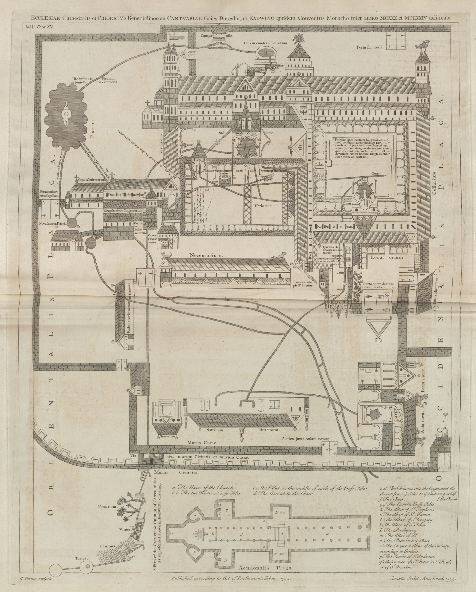
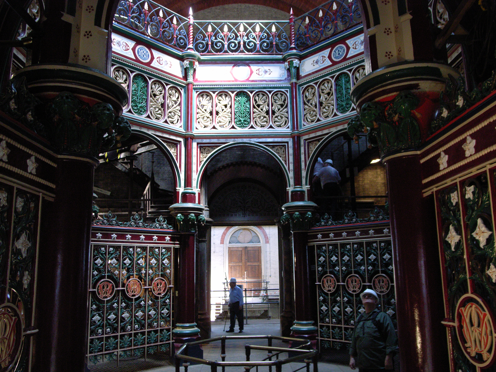

Unit Enquiry: Was the story of water and waste in Britain a steady climb of progress?
Key Stage 3 Unit
Loading quote...
Rank:Peasant0 XP
Visual Source Analysis
Source A: A reconstruction illustration showing the steaming heated chambers and flowing water channels of a Roman public bathhouse in Roman Britain.
Do Now Task: Retrieval Grid
Test your historical foundations. Answer the questions below before moving into today's focus.
Skills (1 Point)
Q1: What does the term chronology mean when we study history?
Answer:Chronology is the arrangement of historical events in the exact order in which they occurred over time.
Evidence & Sources (2 Points)
Q3: If an archaeologist uncovers a Roman coin buried in a field, is it a primary source or a secondary source?
Answer:It is a primary source because it is a physical artifact created during the actual time period under study.
Chronology (3 Points)
Q5: Put these three eras in the correct chronological order, starting with the oldest: Victorian Britain, Iron Age Britain, Roman Britain.
Answer:1. Iron Age Britain, 2. Roman Britain, 3. Victorian Britain.
Skills (1 Point)
Q2: What is the difference between BC and AD on a timeline?
Answer:BC stands for "Before Christ" (counting backward from year 1), while AD stands for "Anno Domini" (in the year of our Lord, counting forward).
Evidence & Sources (2 Points)
Q4: What is the name given to a professional historical detective who digs up and analyzes physical remains from the past?
Answer:An archaeologist.
Lesson 1 Enquiry: Did Roman engineering revolutionise public health for everyone in Britain?
It is easy to assume that people in the past did not care about cleanliness, but Iron Age communities developed highly practical systems that suited their way of life. Because farming roundhouses were spread out across the countryside, digging simple, temporary cesspits was a safe, hygienic, and sustainable way to manage waste without polluting nearby drinking water.
This simple way of life was completely transformed in AD 43 when the Roman Empire invaded Britain. The Romans brought revolutionary sanitation technology and a strong belief that clean, flowing water was vital for keeping a society healthy. To bring vast amounts of clean water into their newly built stone towns and military outposts, such as Corbridge, Roman engineers constructed stone channels called conduits. These conduits used the natural pull of gravity to transport fresh water over miles from distant natural springs directly into urban centres.
In Roman Britain, this water supplied grand public bathhouses, such as the famous complex at Bearsden. Bathhouses were bustling social spaces where citizens exercised, relaxed, and washed themselves by walking in sequence through cold rooms, warm rooms, and steaming hot chambers.
Clean water also constantly flushed through communal public toilets, known as latrines. At Housesteads Fort on Hadrian's Wall, soldiers sat side-by-side on stone benches built over deep, stone-lined channels. A continuous stream of water beneath the seats swept human waste directly into underground sewers, keeping the fort clean and preventing the spread of deadly diseases. When the Romans finally left Britain around AD 410, much of this advanced engineering was abandoned, and sanitation slipped back into primitive patterns for centuries.
Iron Age: Families lived in roundhouses in the countryside. Because they were spread out, they dug simple earth cesspits to collect sewage safely without polluting wells.
Roman Invasion (AD 43): Romans built stone towns and brought clean running water using gravity-fed stone conduits.
Baths & Latrines: Romans bathed in public bathhouses (like Bearsden) to socialize and wash. They sat side-by-side in public running-water toilets (latrines) to flush waste away into sewers.
Decline (AD 410): When the Romans left, their sewers and conduits fell into ruin, and sanitation became primitive again.
Contemporary Source Evidence: Source A
"I am surrounded by all kinds of noise... picture to yourself the assortment of sounds, which are strong enough to make me hate my very powers of hearing! When the gentlemen are exercising with their lead weights... I hear their groans... and next, hear the screech of a hair-plucker... and the various cries of the sausage-seller, the baker, and the sweet-seller, who hawk their goods about the baths."
— Seneca the Younger, Roman Philosopher, Letters to Lucilius, Letter 56, c. AD 62
🗣️ Class Discussion: The Reality of Roman Baths
Why might a wealthy Roman philosopher like Seneca dislike the noise of the bathhouse, while ordinary citizens enjoyed it?
Does Seneca's letter suggest that public bathhouses were primarily for hygiene or for socializing and business?
How does this source challenge the stereotype that the past was completely quiet and simple?
Source B: Roman Pride
"With such an array of indispensable structures carrying so much water, compare, if you will, the idle Pyramids or the useless, though famous, works of the Greeks!"
— Frontinus, Curator Aquarum, De Aquis, c. AD 97
Source C: Frontier Infrastructure
"For the soldiers of the Cohort... under the command of Marcellus... they built this aqueduct to bring fresh water to the fort which had previously suffered from water scarcity."
— South Shields Inscription, Roman Britain, c. AD 222
Key Vocabulary
🕳️ Cesspit: A simple hole dug in the earth used by prehistoric and later societies to collect household sewage and human waste.
🚰 Conduit: A stone channel or pipe designed by Roman engineers to transport clean water over long distances using gravity.
🚽 Latrine: A communal Roman public toilet block, often flushed continuously by running water to carry waste into underground sewers.
Pupil Activities & Writing Tasks
Part A: Core Comprehension
Where did Iron Age families get their fresh water, and how did they dispose of their waste?
Sentence Starter: Iron Age families collected their fresh water from... and disposed of their waste by...
Model Answer: Iron Age families collected their water from natural springs, streams, or hand-dug wells, and they disposed of their waste by digging simple cesspits in the ground, which were buried with soil when full.
What was a Roman conduit, and how did it work?
Sentence Starter: A Roman conduit was designed to... and it worked by using...
Model Answer: A Roman conduit was a stone-built channel designed to carry clean water over long distances into towns, utilizing the natural pull of gravity to move the water.
Describe the different rooms inside a Roman public bathhouse like the one at Bearsden.
Sentence Starter: Inside a Roman public bathhouse, the different rooms included...
Model Answer: A Roman bathhouse contained a sequence of rooms with different temperatures that bathers walked through, including unheated cold rooms, warm rooms for relaxing, and steaming hot rooms for washing.
How did communal Roman latrines keep soldiers clean and healthy?
Sentence Starter: Communal Roman latrines kept soldiers clean and healthy by...
Model Answer: Roman latrines used a continuous stream of running water underneath the seating benches to flush sewage into deep sewers, which swept the filth away and stopped diseases from spreading in crowded forts.
Study Source A (Seneca the Younger). How useful is this source to a historian researching what it was like to visit a Roman bathhouse?
Sentence Starter: Seneca's letter complaining about noise is useful to a historian because...
Model Answer: Source A is highly useful because it is a contemporary primary source written by Seneca who personally experienced the baths. It reveals that Roman bathhouses were busy, noisy, and active social environments, detailing specific activities such as weight-lifting, sausage-selling, and hair-plucking.
Part B: Conceptual Analysis
Explain why the Roman invasion of AD 43 was the main cause of change for sanitation in Britain.
Sentence Starter: The Roman invasion of AD 43 was the main cause of change because...
Model Answer: The Roman invasion of AD 43 was the main cause of change because the Romans brought highly advanced engineering skills, such as building stone conduits and flushing sewers, which did not exist in Iron Age Britain and completely changed how water and waste were managed.
Did the arrival of Roman sanitation benefit all people in Britain equally? (Think about the difference between a wealthy Roman citizen living in a town and a poor British peasant living in a countryside roundhouse).
Sentence Starter: The arrival of Roman sanitation did not benefit everyone equally because...
Model Answer: No, Roman sanitation did not benefit everyone equally. While wealthy town-dwellers and Roman soldiers enjoyed the luxury of flushing public latrines and gravity-fed bathhouses, ordinary British peasants in the countryside experienced absolute continuity, continuing to rely on simple wells and earth cesspits just as their ancestors had done for centuries.
Why is archaeology more significant for historians studying the Iron Age compared to those studying Roman Britain?
Sentence Starter: Archaeology is more significant for studying the Iron Age because...
Model Answer: Archaeology is incredibly significant for studying the Iron Age because there are no written documents from that period, making physical ruins and unearthed cesspits the only evidence available. In contrast, historians studying Roman Britain can use written sources alongside physical remains.
Part C: Contemporary Source Analysis
9. Study the contemporary source by Seneca the Younger. What does this source tell us about what it was like to visit a Roman bathhouse?
Part D: Extension & Research Tasks
Open your internet browser and search for "Silchester Roman Town excavation". Write down two major objects or structures that archaeologists have uncovered at this site that reveal what life was like for the residents.
Sentence Starter: According to Seneca, visiting a Roman bathhouse was...
Model Answer: Seneca's letter shows that Roman bathhouses were busy, noisy, and highly social places. Bathers would hear the groans of people lifting weights, the cries of street food vendors like sausage-sellers and bakers hawking their goods, and the screeches of hair-pluckers, proving that the baths were about social activity and commerce as much as cleanliness.
Look up "Housesteads Roman Fort latrines reconstruction". Use the virtual reconstruction images to draw a simple bird's-eye diagram of how the seating and flushing water channels were organized. Label the sewer line.
Sentence Starter: The physical remains of Roman latrines support Seneca's description by...
Model Answer: Archaeology strongly supports Seneca's description of a highly active and shared hygiene space. The physical remains of side-by-side stone benches and deep sewers at Housesteads Fort confirm that Roman latrines were communal, lacking privacy, and continuously flushed with running water. While Seneca's letter focuses on the noisy, social experience of the public baths, the archaeological evidence proves the practical plumbing systems were designed on a grand scale to keep large populations clean.
Research "Bearsden Roman Bath House National Trust Scotland". Write a short travel-guide paragraph (50-80 words) inviting modern tourists to visit the ruins, explaining what remains can still be seen on the ground today.
✏️ Lesson Check: Quick Quiz
Visual Source Analysis

Source A: A reconstruction showing a medieval water seller carting fresh river water in large barrels through the muddy streets of a British town, c. 1350.
Do Now Task: Retrieval Grid
Test your historical foundations. Answer the questions below before moving into today's focus.
Roman Technology (1 Point)
Q1: What were the stone channels called that Roman engineers built to carry clean water over long distances?
Answer:They were called conduits.
Prehistoric Sanitation (2 Points)
Q3: Why was digging simple, temporary cesspits actually a hygienic and sustainable system for Iron Age people?
Answer:Because roundhouse settlements were spread far apart in the countryside, meaning waste did not collect in high enough density to contaminate their drinking water.
Historical Evidence (3 Points)
Q5: Why does Seneca’s letter complaining about noise at the baths count as a primary source?
Answer:Because it was a first-hand letter written by a person actually living in Rome during the first century AD, witnessing the events directly.
Roman Technology (1 Point)
Q2: How did natural gravity help Roman conduits bring water into towns?
Answer:Conduits were built on a very slight downward slope, allowing water to flow naturally downhill without pumps.
Prehistoric Sanitation (2 Points)
Q4: What happened to Britain's advanced sewer systems and stone conduits after the Romans withdrew in AD 410?
Answer:They fell into disrepair, were abandoned, and crumbled away.
Lesson 2 Enquiry: Why did medieval monasteries have flushing systems while towns drowned in filth?
It is a common myth that people in the Middle Ages (AD 400–1450) were dirty and did not care about cleanliness. In reality, medieval people understood that fresh water was vital and desperately wanted to live in clean environments. However, without a single central government like the Roman Empire to fund massive public works, sanitation became highly unequal. Access to clean water and waste disposal depended entirely on where you lived and your social status.
In rural villages, such as Wharram Percy in Yorkshire, ordinary peasants lived simple lives closely connected to the land. To get their daily water, they collected it directly from local springs, streams, or hand-dug wells. Since they had no indoor toilets, peasants built small wooden outhouses over earth holes in their gardens, using wild moss as a natural toilet paper. Because villages were small and spread out, these simple cesspits were practical and did not cause major health crises.
In stark contrast, medieval monasteries were the pinnacle of engineering luxury. Christian monks were highly literate, exceptionally wealthy, and incredibly organized. Because they believed that cleanliness brought them closer to God and aided their spiritual lives, monasteries designed complex water systems using expensive lead and wooden pipes. For example, twelfth-century blueprints of Canterbury Priory show a sophisticated network of green pipes bringing fresh spring water into the monastery for drinking and washing, and red pipes directing dirty waste water away to flush the communal latrines.
The most severe sanitation crises occurred in rapidly growing medieval towns. High population density meant shared toilets overflowed easily, leaking human waste into the streets and nearby wells. Yet, town councils actively tried to manage these challenges. They introduced laws fining citizens who threw waste in streets, hired public scavengers known as "rakers" to clean streets, and constructed massive municipal water pipes, such as the famous Great Conduit in London, which piped fresh water from country springs directly to public fountains. While wealthy merchants had private wells, poorer citizens had to collect water from these public conduits or buy it from "water sellers" who hauled barrels through the streets on horseback. To keep towns from drowning in filth, councils employed specialized laborers called "gongfermers." Working strictly under the cover of night, these workers climbed into filthy, barrel-lined cesspits to shovel out human waste and cart it outside the town walls. Despite their efforts, the lack of clean piped water made medieval towns smelly and dangerous places to live.
The Local Connection: Titchfield Abbey
Just a few miles from Stubbington lies Titchfield Abbey, founded in 1232. The Premonstratensian canons (monks) who lived there built a highly sophisticated freshwater system. They diverted clean water from the River Meon and channeled it through underground clay and lead pipes directly into the Abbey's kitchens and to flush the reredorter (communal latrines). This created an oasis of cleanliness that stood in stark contrast to the nearby village of Crofton (modern Stubbington), where medieval peasants had no clean piped water and had to rely on simple garden cesspits.
Medieval Life: People in the Middle Ages (AD 400–1450) wanted to be clean, but without a strong central government like Rome, sanitation depended heavily on wealth and where people lived.
Peasants: In country villages like Wharram Percy, peasants got water from wells and streams. They used wooden garden outhouses over simple dirt holes (cesspits) and wiped with wild moss.
Monasteries: Monks believed cleanliness brought them closer to God. Blueprints of Canterbury Priory show advanced plumbing: green pipes for fresh water, and red pipes to flush waste out of latrines.
Towns: In crowded towns, toilets overflowed, but councils fought back. They introduced street-cleaning fines, hired "rakers" to sweep roads, and built massive stone pipelines called conduits (like London's Great Conduit) to bring clean water. Gongfermers worked at night to shovel out human waste from cesspits.
The Local Connection: Titchfield Abbey (near Stubbington) had advanced plumbing. Monks used underground lead and clay pipes to divert water from the River Meon to flush their latrines. Meanwhile, nearby peasants in Crofton had to rely on simple garden cesspits.
Contemporary Source Evidence: Source B
"Have the filth lying in the streets removed... The filth from the houses is infecting the air, endangering people with this sickness."
— King Edward III, Letter to the Mayor of London, 1357
🗣️ Class Discussion: The King's Mandate
Why was the King concerned about the filth in the streets of London in 1357?
What link did medieval leaders make between bad smells ("infecting the air") and epidemic disease?
Does this source show that medieval authorities cared about public sanitation?
Key Vocabulary
🧹 Gongfermer: A specialized medieval laborer paid to empty human waste from town cesspits, working exclusively under the cover of night.
🚽 Privy: A small outdoor wooden toilet built over a cesspit, often shared by multiple families in medieval towns.
🐴 Water Seller: A medieval merchant who transported fresh water from local rivers or conduits in large barrels on horseback to sell to townspeople.
Pupil Activities & Writing Tasks
Part A: Core Comprehension
Why was sanitation so unequal in medieval Britain compared to Roman Britain?
Sentence Starter: People in rural medieval villages like Wharram Percy got their water from... and disposed of waste by...
Model Answer: Sanitation was unequal because there was no longer a single central government to fund and maintain public plumbing, meaning clean water and waste disposal depended entirely on an individual’s wealth and social status.
How did peasant families in villages like Wharram Percy manage their sanitation?
Sentence Starter: Monasteries designed complex water systems because they believed...
Model Answer: Peasants in Wharram Percy collected fresh water from local springs, streams, or hand-dug wells, and they used outhouses built over earth cesspits in their gardens, using moss for toilet paper.
What did the green and red lines on the Canterbury Priory blueprints represent, and what does this tell us about monasteries?
Sentence Starter: Christian monks built advanced plumbing networks using...
Model Answer: The green lines represented pipes bringing fresh water in for drinking and washing, while the red lines carried waste water away to flush the toilets. This tells us that monasteries were wealthy enough to design and build highly advanced engineering systems.
Why was the job of a "gongfermer" so important to medieval towns, and why did they work at night?
Sentence Starter: The jobs of gongfermers and rakers in medieval towns were to...
Model Answer: Gongfermers were vital because they shoveled out overflowing cesspits to keep towns clean. They worked exclusively at night so that the terrible smells and messy carts would not disrupt the crowded streets during the day.
Part B: Conceptual Analysis
Why was high population density in medieval towns the main cause of the urban sanitation crisis?
Sentence Starter: King Edward III's letter to the Mayor of London reveals...
Model Answer: High population density was the main cause of the crisis because thousands of people lived packed closely together, meaning communal privies overflowed quickly, and human waste easily leaked into the nearby shallow wells that people used for drinking water.
How did the worldview and daily routine of a Christian monk differ from that of a town laborer, and how did this affect their sanitation?
Sentence Starter: Medieval town councils tried to manage sanitation challenges by...
Model Answer: Monks valued strict daily routines, prayer, and physical cleanliness as a spiritual duty, and they had the collective wealth to build piped plumbing. Town laborers were poor, lived in unorganized, crowded spaces, and had to rely on dirty rivers or expensive water sellers because they lacked the money to build public systems.
To what extent did the lives of ordinary peasants change when Britain transitioned from the Roman Period to the Middle Ages?
Sentence Starter: Sanitation in medieval Britain was highly unequal because...
Model Answer: For ordinary peasants, there was almost absolute continuity. They did not have access to advanced Roman bathhouses or conduits in their countryside settlements, and in the Middle Ages, they continued to rely on natural wells, springs, and simple garden cesspits just as their ancestors had done for centuries.
Part C: Contemporary Source & Local Connection Analysis
Study the contemporary source by King Edward III. What does this source tell us about the government's attitude toward public health in medieval London?
Sentence Starter: King Edward III's letter shows that medieval authorities...
Model Answer: The letter reveals that the king felt responsible for municipal cleanliness, as he explicitly ordered the Mayor of London to remove the filth. It also shows that medieval leaders understood there was a direct link between the terrible smell of rotting waste in the streets ("infecting the air") and the spread of deadly diseases ("endangering people with this sickness").
Study the sanitation system of Titchfield Abbey. Why did the monks enjoy clean running water while the nearby peasants of Crofton did not?
Sentence Starter: In his letter, Edward III complains that the filth in the streets was...
Model Answer: The monks of Titchfield Abbey had the collective wealth, organization, and literacy to design and build an advanced plumbing system using water diverted from the River Meon. Medieval peasants in Crofton lacked the funding, materials, and specialized knowledge, forcing them to rely on simple wells and garden cesspits.
Part D: Extension & Research Tasks
Open your internet browser and search for "Wharram Percy medieval village". Find the official English Heritage site and write down two reasons why this village was eventually abandoned by its inhabitants.
Look up "Canterbury Cathedral waterworks plan 1165". Study the highly detailed drawings made by the monks. Write a brief description of where the water was sourced from and how it entered the monastery walls.
Search for "The Luttrell Psalter water seller". Look at the fourteenth-century illustration of the horse and water cart. Draw a simple sketch of the water seller's equipment and write a brief description of how they transported their goods.
✏️ Lesson Check: Quick Quiz
Visual Source Analysis
Source A: A reconstruction showing Sir John Harington's first water closet (flushing toilet) designed in 1596, featuring an overhead cistern and flushing mechanism.
Do Now Task: Retrieval Grid
Test your historical foundations. Answer the questions below before moving into today's focus.
Medieval Sanitation (1 Point)
Q1: What was the name of the specialized medieval laborers who emptied urban cesspits under the cover of darkness?
Answer:They were called gongfermers.
Roman Sanitation (2 Points)
Q3: Why did Roman engineers build water conduits with a very gentle, downward slope?
Answer:To allow natural gravity to pull the fresh water downhill over vast distances into towns without the need for mechanical pumps.
Disciplinary Skills (3 Points)
Q5: What is the difference between change and continuity when we study history?
Answer:Change describes things that become different over time, while continuity describes things that remain stable and stay the same across different eras.
Medieval Sanitation (1 Point)
Q2: Why was sanitation so unequal in medieval villages compared to wealthy monasteries?
Answer:Monasteries possessed the collective wealth, literacy, and organization to build lead-piped plumbing systems, while poor villagers had to rely on simple wells and garden cesspits.
Roman Sanitation (2 Points)
Q4: How did Roman soldiers wipe themselves in communal latrines like the ones at Housesteads Fort?
Answer:They used a shared sea sponge attached to the end of a long wooden stick, which was cleaned in a running channel of water.
Lesson 3 Enquiry: If the flushing toilet was invented in 1596, why were Londoners still buying water from barrels in 1700?
Between 1450 and 1750, Britain entered the Early Modern era. During this period, cities like London experienced a massive population explosion. As tens of thousands of families migrated from the countryside to find work, urban neighborhoods grew incredibly overcrowded and came under intense pressure. Unfortunately, municipal sanitation systems did not grow to match this rapid urban expansion, creating a severe public health crisis.
For the vast majority of ordinary citizens, everyday waste disposal changed very little from the Middle Ages—showing strong historical continuity. Most families still relied on a basic outdoor privy built over a deep earth cesspit. In crowded cities, many landlords built indoor toilets called "houses of easement." Instead of connecting to sewers, these toilets emptied directly into deep cellars below the floorboards. In his famous seventeenth-century diary, the government official Samuel Pepys complained about the terrible stench of his neighbor's cellar privy leaking directly through the walls and flooding his own basement.
Water supply was also a constant struggle. In the countryside, people still hauled water from local wells, but city dwellers had to find new, expensive methods. Some gathered water for free from public stone conduits. Others paid a "water seller" to deliver river water to their doors in large wooden barrels on horseback. By the 1600s, private water companies began piping water directly into the homes of wealthy citizens who could afford to pay a regular subscription fee.
The most surprising fact of this era is that the first flushing toilet—the water closet—was actually invented in 1596 by a courtier named Sir John Harington for his godmother, Queen Elizabeth I. Yet, almost no one used it. For a flushing toilet to function, a house needed a constant supply of pressurized, running water and a connection to a sewer system to wash the waste away. Because Early Modern London completely lacked these public networks, Harington’s invention remained a useless luxury for the royal court. For the next two centuries, ordinary Londoners had no choice but to keep using wooden privies and buying water by the barrel.
Urban Crowding: Between 1450 and 1750 (Early Modern era), cities like London grew very fast. This overcrowding created a major sanitation crisis because there were no public systems to clean up.
Houses of Easement: Most people still used simple outdoor toilets over cesspits. In towns, some had indoor toilets called "houses of easement" that emptied directly into cellars. Samuel Pepys wrote that his basement flooded with a neighbor's toilet waste!
Getting Water: People hauled water from wells, collected it from public conduits, or paid water sellers to deliver it in barrels on horses. Wealthy people paid private companies to pipe water into their houses.
The First Flush: In 1596, Sir John Harington invented the first flushing toilet for Queen Elizabeth I. However, it was not used by ordinary citizens because there was no running water infrastructure or street sewers to make it work.
Contemporary Source Evidence: Source C
"Going down into my cellar, I put my foot into a great heap of [waste], by which I find that my neighbour's house of office [privy] is full and runs into my cellar, which do trouble me..."
— Samuel Pepys, London Resident and Government Official, Diary Entry, 20 October 1660
🗣️ Class Discussion: Pepys' Cellar Crisis
What does this source tell us about the unexpected dangers of living in a crowded, wealthy Early Modern street?
How does this source challenge the idea that sanitation problems only affected the very poorest members of society?
What does a "house of office" tell us about how waste was collected inside homes?
Key Vocabulary
🚽 House of Easement: An Early Modern indoor or outdoor toilet built over a cesspit or cellar, used to collect human waste.
💦 Water Closet: An early form of the flushing toilet, invented in 1596, which used a tank of water to wash waste down a pipe.
🏗️ Infrastructure: The basic physical systems—such as water pipes, roads, and sewers—that a city or country needs to function effectively.
Pupil Activities & Writing Tasks
Part A: Core Comprehension
Why did the growth of Early Modern towns put so much pressure on urban sanitation?
Sentence Starter: A house of easement was an indoor toilet that...
Model Answer: The rapid migration of people from the countryside caused a massive population explosion, meaning towns became incredibly overcrowded and generated far more waste than the existing systems could handle.
What were the three main ways people in Early Modern towns could obtain water?
Sentence Starter: For ordinary people in Early Modern Britain, waste disposal showed continuity because...
Model Answer: People could collect water for free from public stone conduits, buy river water delivered in barrels by water sellers, or pay a private water company to pipe water directly into their homes.
Why did Sir John Harington’s flushing toilet fail to catch on when it was invented in 1596?
Sentence Starter: Sir John Harington's flushing toilet was useless without infrastructure because...
Model Answer: It failed to catch on because Britain lacked the essential municipal infrastructure, such as clean, running piped water to refill the toilet and a network of street sewers to carry the flushed waste away safely.
What was a "house of easement," and where did its waste go?
Sentence Starter: The difference in water access between wealthy merchants and poor laborers was...
Model Answer: A house of easement was an indoor toilet built inside a home that emptied human waste directly into a deep cellar below the floorboards.
Part B: Conceptual Analysis
To what extent did waste disposal change for most ordinary people between the Middle Ages and the Early Modern period?
Sentence Starter: Samuel Pepys' diary entry reveals that even wealthy residents...
Model Answer: For ordinary people, waste disposal showed almost complete continuity. Despite the invention of the flushing toilet, most families still had to use basic outdoor wooden privies built over dirt cesspits, exactly as their medieval ancestors had done.
Explain why technology (like Harington's flushing toilet) is useless without the infrastructure to support it.
Sentence Starter: The main reason for the sanitation crisis in London during the 1600s was...
Model Answer: Technology like a flushing toilet is useless without infrastructure because it cannot function on its own. Without piped running water to flush the bowl and a proper sewage network to remove the waste, the physical toilet remains a decorative object rather than a working system.
How did the water supply of a wealthy merchant in London compare to a poor laborer in the same street?
Sentence Starter: Samuel Pepys' entry supports the idea of an infrastructure lag because...
Model Answer: There was a massive difference. A wealthy merchant could pay private water companies to pipe clean water directly into their home, whereas a poor laborer had to carry heavy buckets from public conduits or buy water by the bucket from street sellers.
Part C: Contemporary Source Analysis
8. Study the diary entry of Samuel Pepys. What does this tell us about the unexpected dangers of living in a crowded, wealthy Early Modern street?
Part D: Extension & Research Tasks
Open your internet browser and search for "Samuel Pepys Great Fire of London diary". Read his entry from September 2, 1666. Write down three things Pepys did to protect his belongings from the fire.
Sentence Starter: The difference in water access shows that early modern sanitation...
Model Answer: Pepys' diary entry reveals that even wealthy residents living in nice houses faced disgusting sanitary problems. Because houses were built so close together, a neighbor's cellar privy could overflow, seep through the walls, and fill an adjacent cellar with human waste, showing that lack of proper sewage affected everyone.
Look up "Sir John Harington Ajax water closet". Find a diagram or description of his 1596 design. Draw a simple sketch showing the water tank, the valve, and the waste pipe, and label how the flush worked.
Sentence Starter: According to Pepys, his cellar was filled with...
Model Answer: According to Pepys' diary entry of October 1660, his cellar was filled with a great deal of human waste that had seeped through the wall from his neighbor Mr. Turner's overflowing cellar privy.
Research "The New River London 1613". Write a short paragraph (50-80 words) explaining what this engineering project was, where the water came from, and why it was so important for London’s growth.
Sentence Starter: Pepys' experience shows that private wealth could not solve sanitation because...
Model Answer: Pepys' experience shows that private wealth alone could not solve sanitation because individual properties were physically connected. Even though Pepys was a wealthy government official living in a nice house, the lack of a municipal sewage system meant that he could not prevent his neighbor's waste from flooding his own cellar. Public health required collective, organized infrastructure rather than isolated private wealth.
✏️ Lesson Check: Quick Quiz
Visual Source Analysis
Source A: A reconstruction showing a shared yard pump in an industrial British city, c. 1840, where working-class families gather to fetch water.
Do Now Task: Retrieval Grid
Test your historical foundations. Answer the questions below before moving into today's focus.
Disciplinary Skills (1 Point)
Q1: What is historical continuity, and can you give one example from the Middle Ages to the year 1700?
Answer:Continuity means when things stay the same over time. An example is how ordinary people in both eras still used simple outdoor wooden privies built over dirt cesspits.
Early Modern Water (2 Points)
Q3: Why was the rapid growth of London in the 1600s a major problem for the city’s water supply?
Answer:The massive population explosion put intense pressure on water sources, forcing many poorer residents to buy dirty river water in barrels from horse-drawn water sellers.
Sir John Harington (3 Points)
Q5: In 1596, Sir John Harington invented the first flushing "water closet." Why did it remain a useless luxury for the royal court for two centuries?
Answer:A flushing toilet requires a constant supply of pressurized, running water and a connection to a sewer system to wash waste away. Early Modern Britain completely lacked this infrastructure.
Disciplinary Skills (1 Point)
Q2: Why is Samuel Pepys' diary considered an extremely valuable primary source for historians studying public health?
Answer:It is a first-hand, eyewitness account that reveals real, everyday sanitary problems, such as a neighbor's cellar toilet leaking through the walls and flooding his basement.
Early Modern Water (2 Points)
Q4: What was a "house of easement," and why did it frequently cause terrible smell and pollution?
Answer:It was an indoor toilet that emptied waste directly into a deep cellar below the floorboards, rather than connecting to any sewer system.
Lesson 4 Enquiry: How did the "Workshop of the World" allow cholera to kill thousands of its workers?
Between 1750 and 1850, Britain underwent a dramatic transition known as the Industrial Revolution. The nation’s population surged rapidly, skyrocketing from around 6 million people in 1750 to a massive 21 million by 1850. As Britain became the world’s first industrial nation, thousands of rural families flooded into newly expanding cities to work in the massive coal mines and steam-powered textile factories.
To house this rapid influx of workers, landlords quickly threw up cheap, narrow streets of brick terraced houses. These houses were built back-to-back, with tiny shared yards. Because the government followed a *laissez-faire* (hands-off) approach, there were no building regulations, and sanitation was a major struggle. Poorer families did not have running water inside their homes. Instead, they had to collect water from shared street pumps. Water companies, owned by private businessmen, rarely supplied these pumps for more than two or three hours a day, and the water was frequently brown and polluted.
Waste disposal was equally primitive. Several families had to share a single outdoor wooden toilet called a privy. These privies were built directly over deep cesspits in the yard. Because landlords rarely paid to have these cesspits cleared, they regularly overflowed into the yards where children played.
In 1831, a terrifying disease arrived in Britain: cholera. This waterborne illness struck with terrifying speed. Within hours of infection, victims suffered severe vomiting and diarrhoea, their skin turned cold and blue, and they died. Britain's first cholera epidemic was a national disaster, killing over 31,000 people. At the time, doctors had no understanding of germs. Influenced by the "Miasma Theory," they believed cholera was caught by breathing in "bad air" from rotting waste. They did not realize that the true cause of the slaughter was contaminated drinking water, as overflowing cesspits leaked directly into the shallow underground wells supplying the shared yard pumps.
The Local Connection: The 'Fareham Reds' and Clay Pipes
During the Industrial Revolution, Fareham became famous for its clay-pipe and brick industry, producing the iconic 'Fareham Red' bricks. In 1849, due to overcrowding around the quays and cholera fears at Fareham Creek, Fareham petitioned to establish a Local Board of Health under Edwin Chadwick's 1848 Act. The town's clay pits became crucial to the national story: Fareham's brickworks manufactured the massive clay sewage pipes and brick tunnels that were shipped across the South Coast to build the sewer systems that saved thousands of lives.
Industrial Revolution: Between 1750 and 1850, Britain's population grew from 6 million to 21 million. Thousands of families moved from the countryside into cities to work in factories and mines.
Terraced Houses: Landlords built cheap, crowded, back-to-back terraced houses. There were no building laws (laissez-faire), and houses lacked indoor running water. Families shared dirty yard pumps that only worked for a few hours a day.
Yard Privies: Families shared basic outdoor toilets built over deep dirt pits (cesspits). Landlords rarely cleared these pits, so they overflowed into the yards.
Black Cholera: In 1831, a deadly waterborne disease called cholera killed 31,000 people. Doctors believed cholera was caused by bad air (Miasma Theory) rather than dirty drinking water contaminated by leaking cesspits.
The Local Connection: Fareham produced the famous "Fareham Red" bricks and clay pipes. In 1849, Fareham set up one of England's first Local Boards of Health. Its local brickworks and clay pits manufactured the physical drainage pipes and sewer bricks used to clean up the South Coast.
Contemporary Source Evidence: Source D
"The various forms of epidemic, endemic, and other disease caused, or aggravated, or propagated chiefly amongst the labouring classes by atmospheric impurities produced by decomposing animal and vegetable substances, by damp and filth, and close and overcrowded dwellings prevail amongst the population in every part of the kingdom... That such disease is always found in connexion with the physical circumstances above specified, and that where those circumstances are removed by drainage, proper cleansing, and other means of diminishing atmospheric impurity, the frequency and intensity of such disease is abated..."
— Edwin Chadwick, Poor Law Commissioner, Report on the Sanitary Condition of the Labouring Population of Great Britain, 1842
🗣️ Class Discussion: Chadwick's Investigations
According to Chadwick, what are the primary causes of epidemic diseases among the working classes?
What solutions does Chadwick propose to stop the frequency and intensity of these diseases?
Although Chadwick still believed in Miasma theory, why did his focus on clearing filth and improving drainage still help to improve public health?
Key Vocabulary
🏚️ Terraced Houses: Rows of identical brick houses built back-to-back with shared walls, constructed quickly to house factory workers in expanding industrial cities.
💨 Miasma: A widely believed scientific theory in the nineteenth century that diseases like cholera were caused by breathing in noxious "bad air" or smells from decaying matter.
☣️ Cholera Epidemic: A rapid, widespread outbreak of a highly infectious waterborne disease that causes extreme dehydration and can kill victims within hours.
Pupil Activities & Writing Tasks
Part A: Core Comprehension
How much did Britain’s population grow between 1750 and 1850, and why did this growth happen?
Sentence Starter: Between 1750 and 1850, Britain's population surged because...
Model Answer: Britain's population surged from 6 million in 1750 to 21 million in 1850, largely because of the Industrial Revolution as people flooded into cities to find work in new factories and coal mines.
What challenges did working-class families face when trying to get water in industrial towns?
Sentence Starter: Ordinary working-class families in industrial cities got their water from...
Model Answer: Families had to struggle to get water from shared pumps in streets or yards. These pumps were only turned on for a few hours a day by private water companies, and the water was often dirty and contaminated.
Why did cesspits under shared yard privies frequently overflow?
Sentence Starter: Cesspits in overcrowded industrial towns frequently overflowed because...
Model Answer: Cesspits frequently overflowed because they were not connected to sewers, and landlords rarely paid the money required to hire workers to empty them.
What were the terrifying physical symptoms of cholera, and how many people died in Britain's first epidemic?
Sentence Starter: The waterborne disease that struck Britain in 1831 was... and it killed...
Model Answer: Cholera caused victims to vomit, suffer severe diarrhoea, and turn cold and blue before dying within a few hours. The first epidemic in 1831 killed over 31,000 people.
Part B: Conceptual Analysis
Why was the government's lack of building regulations the primary cause of poor sanitation in industrial cities?
Sentence Starter: The lack of government regulations allowed greedy landlords to...
Model Answer: The lack of regulations meant greedy landlords could build cheap, back-to-back terraced houses without installing indoor running water, proper toilets, or connections to sewers, prioritising profit over public health.
Explain how the "Miasma Theory" (the belief that bad air spreads disease) had a negative consequence on how doctors tried to stop cholera.
Sentence Starter: Victorian doctors who believed in the Miasma Theory failed to stop cholera because...
Model Answer: Because doctors believed disease was spread by smelling bad air, they focused on cleaning up smelly rubbish on the streets rather than purifying contaminated drinking water. As a result, people continued to drink infected water and the cholera epidemic spread rapidly.
Compare the sanitation experience of a wealthy factory owner with a poor factory worker living in the same town.
Sentence Starter: Chadwick's report concluded that epidemic diseases were caused by...
Model Answer: There was a massive difference. A wealthy factory owner lived in a spacious, clean area, could afford private indoor running water, and had clean facilities. In contrast, a poor factory worker lived in crowded terraced housing, shared a dirty yard pump that was rarely on, and shared an overflowing privy with multiple families.
Part C: Contemporary Source & Local Connection Analysis
Study the report excerpt by Edwin Chadwick from 1842. According to Chadwick, what are the primary causes of epidemic diseases among the working classes?
Sentence Starter: The local brick and clay-pipe industry in Fareham was connected to urban reform by...
Model Answer: Chadwick identifies that epidemic diseases are caused by "atmospheric impurities" such as dampness, filth, rotting animal and vegetable substances, and living in overcrowded, unventilated houses.
How did Fareham's local clay-pipe and brick industry contribute to solving the national public health crisis of Victorian Britain?
Sentence Starter: According to John Leech's cartoon 'A Court for King Cholera,' the slums were...
Model Answer: Fareham's local brick and clay-pipe industry manufactured the actual physical drainage pipes and brick sewer tunnels needed to build municipal sewer networks, supplying the infrastructure that cleaned up cities along the South Coast.
Part D: Extension & Research Tasks
Open your internet browser and search for "The Great Stink of London 1858". Write a short description of what this event was and how it forced politicians in Parliament to take public health seriously.
Search for "Victorian back-to-back terraced housing Leeds". Find an image of a remaining Victorian back-to-back street. Sketch a simple diagram showing how these houses shared walls, and explain why this made ventilation and lighting so poor.
Look up "Edwin Chadwick biography Science Museum". Write down three key public health reforms that Chadwick recommended in his 1842 report to improve the lives of the poor.
✏️ Lesson Check: Quick Quiz
Visual Source Analysis

Source A: A reconstruction showing the spectacular, cathedral-like interior of Joseph Bazalgette's Crossness Pumping Station in London, opened in 1865.
Do Now Task: Retrieval Grid
Test your historical foundations. Answer the questions below before moving into today's focus.
Industrial Britain (1 Point)
Q1: What was the name of the terrifying waterborne disease that first struck Britain in 1831, killing over 31,000 people?
Answer:Cholera.
Early Modern Sanitation (2 Points)
Q3: Why was the rapid growth of London in the 1600s a major problem for the city’s water supply?
Answer:The massive population explosion put intense pressure on water sources, forcing many poorer residents to buy dirty river water in barrels from horse-drawn water sellers.
Disciplinary Skills (3 Points)
Q5: What is "presentism" and why must historians avoid it when studying prehistoric sanitation?
Answer:Presentism is judging past societies by modern standards. Historians must avoid it because Iron Age cesspits were actually highly practical and sustainable for low-density farming communities, rather than just "dirty."
Industrial Britain (1 Point)
Q2: What was the "Miasma Theory" that Victorian doctors believed in before germs were discovered?
Answer:The belief that diseases were spread by breathing in noxious "bad air" or smells from rotting matter.
Early Modern Sanitation (2 Points)
Q4: In 1596, Sir John Harington invented the first flushing "water closet." Why did it remain a useless luxury for the royal court for two centuries?
Answer:A flushing toilet requires a constant supply of pressurized, running water and a connection to a sewer system to wash waste away. Early Modern Britain completely lacked this infrastructure.
Lesson 5 Enquiry: Who really "sorted" British sanitation—the scientists, the engineers, or the politicians?
By the 1850s, Britain's industrial cities had reached a breaking point. Cholera outbreaks repeatedly devastated urban communities, yet doctors remained powerless because they still blamed "miasma" (bad air). The breakthrough that began to solve this crisis came not from a massive government plan, but from the patient detective work of a London doctor named John Snow. During the 1854 cholera outbreak in Soho, Snow mapped the locations of deaths and traced the infection directly to a popular street pump on Broad Street. After he convinced the local parish to remove the pump’s handle, the local epidemic stopped. Snow proved that cholera was a waterborne disease spread by drinking water contaminated with sewage, though many conservative politicians and doctors refused to believe him for years.
While Snow provided the scientific proof, London’s terrible infrastructure required an engineering triumph. In the hot summer of 1858, the stench of raw sewage in the River Thames became so overpowering that it disrupted Parliament—an event known as "The Great Stink." Driven by self-preservation, politicians finally gave the brilliant engineer Joseph Bazalgette the funding to rebuild the capital's sanitation system. Between 1858 and 1865, Bazalgette designed and constructed a spectacular network of 1,300 miles of brick sewers beneath London's streets. This massive engineering feat successfully diverted waste away from the river, saving thousands of working-class lives.
The final piece of the puzzle fell into place in 1860 when French scientist Louis Pasteur proved "Germ Theory"—the revolutionary discovery that microscopic organisms cause disease. This scientific breakthrough destroyed the old miasma myth forever. With undeniable scientific proof, the British government could no longer ignore its duty. In 1875, Parliament passed the landmark Public Health Act. This powerful law forced local councils to take responsibility for public health by ensuring every citizen had access to clean, piped water and houses connected to street sewers. Two thousand years after the Romans left, Britain finally established a permanent, clean, and democratic system of public sanitation.
The Local Connection: Stubbington's Rural Lag
While major cities like Portsmouth built high-tech water towers (like Foxbury) and reservoirs (at Farlington) in the mid-19th century, the farming families of rural Stubbington experienced strong historical continuity. Private water companies refused to lay expensive mains pipes out to small country villages, meaning Stubbington residents still had to drink from shallow wells and use outdoor privies well into the 1900s, showing that public health reforms did not arrive everywhere at once.
John Snow's Map: In 1854, Dr. John Snow mapped cholera deaths in London and proved that the disease was spread by contaminated drinking water from the Broad Street street pump. Removing the pump's handle stopped the local outbreak.
The Great Stink: In 1858, the River Thames smelled so bad that it disrupted Parliament. To escape the stench, politicians funded Joseph Bazalgette to build a 1,300-mile brick sewer network beneath London.
Germ Theory & Clean Laws: In 1860, Louis Pasteur proved Germ Theory (microbes, not smells, cause disease). This forced the government to pass the 1875 Public Health Act, making clean piped water and home sewer connections a legal right.
The Local Connection: Stubbington experienced a "rural lag." While nearby Portsmouth had water mains and water towers in 1860, small villages like Stubbington continued using shallow wells and outdoor privies until the early 1900s because private companies refused to lay expensive pipes to farming areas.
Contemporary Source Evidence: Source E
"We prefer to take our chance with cholera than be bullied into health. There is nothing a man hates so much as being cleansed against his will or having his floor swept, his hall whitewashed, his dung heaps cleared away..."
— The Times Newspaper, Editorial on Sanitary Reform and Government Interference, 1848
🗣️ Class Discussion: Freedom vs. Cleanliness
What does this source reveal about why many Victorians resisted government plans to clean up cities?
Is it ever right for the government to force citizens to clean their homes or get vaccinated to protect the wider public?
How does this source illustrate the difficulty politicians faced when passing public health laws?
Key Vocabulary
🔬 Germ Theory: The scientific breakthrough proved by Louis Pasteur in 1860 that microscopic organisms (germs), rather than bad smells, cause infectious diseases.
👃 The Great Stink: The hot summer of 1858 when the smell of raw sewage in the River Thames became so intense that it forced Parliament to fund a new London sewer system.
📜 Public Health Act of 1875: A landmark British law that forced local councils to take full responsibility for providing clean piped water and proper sewer connections to all homes.
Pupil Activities & Writing Tasks
Part A: Core Comprehension
How did Dr. John Snow prove that cholera was spread through contaminated water rather than bad air in 1854?
Sentence Starter: Dr. John Snow proved that cholera was spread by...
Model Answer: John Snow mapped the locations of cholera deaths in Soho and traced the outbreak back to a single water pump on Broad Street, proving the disease stopped when the pump's handle was removed.
What was "The Great Stink" of 1858, and why was it a turning point for political action?
Sentence Starter: The Great Stink of 1858 was caused by... and it forced politicians to...
Model Answer: The Great Stink was the summer of 1858 when the smell of raw sewage in the River Thames became so terrible that it disrupted Parliament, forcing politicians to finally fund a new sewer system to save themselves from the smell.
Explain how Joseph Bazalgette’s sewer system improved public health in London.
Sentence Starter: Joseph Bazalgette solved London's sanitation crisis by building...
Model Answer: Bazalgette built a 1,300-mile network of brick sewers beneath the streets that diverted raw sewage away from the River Thames and residential areas, preventing the waste from contaminating drinking water supplies.
What was the significance of Louis Pasteur’s Germ Theory in 1860?
Sentence Starter: Louis Pasteur's discovery of Germ Theory was significant because...
Model Answer: Pasteur's Germ Theory was highly significant because it proved scientifically that microscopic organisms caused disease, which disproved the old "Miasma Theory" and forced governments to realize that clean water was essential to stop germs from spreading.
Part B: Conceptual Analysis
Who was most responsible for "sorting" British sanitation—the scientists (Snow/Pasteur), the engineer (Bazalgette), or the politicians (1875 Act)? Support your answer with specific evidence.
Sentence Starter: The group ultimately most responsible for sorting British sanitation was...
Model Answer: While scientists and engineers were crucial, the politicians were ultimately most responsible because without the 1875 Public Health Act, clean water and sewers remained voluntary. The politicians used their legal power to force all local councils to install this vital infrastructure across the entire country.
Why did it take so long (from Snow's discovery in 1854 to the Public Health Act in 1875) for clean water to become a legal right for everyone in Britain?
Sentence Starter: It took over twenty years for the government to pass laws because of...
Model Answer: It took over twenty years because of the government's traditional *laissez-faire* attitude and fierce resistance from the public and landowners, who did not want to pay higher taxes or be "forced" to clean up their properties by national laws.
Why is the 1875 Public Health Act considered a major turning point in British history compared to previous individual water schemes?
Sentence Starter: The 1875 Public Health Act is considered a major turning point because...
Model Answer: The 1875 Act is a major turning point because it ended the *laissez-faire* era and marked the first time the national government took legal responsibility for the physical health of its citizens, transforming clean water from a luxury for the rich into a legal right for all.
Part C: Contemporary Source & Local Connection Analysis
Study the quote from *The Times* newspaper from 1848. What does this source reveal about why many Victorians resisted government plans to clean up cities?
Sentence Starter: The Times editorial of 1848 reveals that Victorians...
Model Answer: The source reveals that Victorians fiercely valued their personal freedom and disliked government interference. The writer explains that they would literally rather risk catching cholera than be "bullied" by government inspectors forcing them to clean their homes, clear away waste, or change their lifestyles.
Why were families in Stubbington still drinking from wells in 1900, even though nearby Portsmouth had sorted its clean water supply forty years earlier?
Sentence Starter: Farming families in rural Stubbington experienced a 'rural lag' because...
Model Answer: Stubbington experienced a "rural lag" because private water companies prioritized building expensive piped water networks in high-density, profitable urban areas like Portsmouth. Small farming villages were not profitable, leaving Stubbington families dependent on traditional wells and privies.
Part D: Extension & Research Tasks
Open your internet browser and search for "John Snow Broad Street Pump cholera map". Examine the original map he drew. Write a short paragraph describing how he used black bars to represent deaths and why this visual method was so persuasive to the local parish council.
Look up "Crossness Pumping Station Bazalgette architecture". Find images of the interior of this Victorian sewage pumping station. Write down three ways the Victorians decorated this building and explain why they spent so much money making a sewer building look like a magnificent "cathedral of sanitation."
Search the news for "UK sewage dumping in rivers today". Write a brief summary (50-80 words) comparing the water pollution issues we face in the 21st century with the sanitation challenges Joseph Bazalgette had to solve in Victorian London.
Read the Local Connection block about 'Stubbington's Rural Lag.' Explain why the experience of a rural farming family in Hampshire c. 1880 differed so significantly from that of a city dweller in nearby Portsmouth.
✏️ Lesson Check: Quick Quiz
⏳ Sanitation Chronology Timeline
👤 Historical Figures Directory
Show Directory [Expand]
🖨️ Educator Resource Hub: Course Worksheets
Select a worksheet pack below to load a live document preview. You can customize teacher answers, print or export directly to Microsoft Word, and display mock layouts.
Select Worksheet Pack
Complete Study Booklet (31 Pages)
Complete unit study pack including all 5 lessons with Do Now sheets, key vocabularies, core narratives, historical source evidences, and pupil activity questions.
Lesson 1: Prehistoric & Roman
5-page worksheet containing Do Now retrieval grid, Roman bathhouse reconstruction visual source, Seneca's written evidence, and Activities.
Lesson 2: Medieval Britain
5-page worksheet containing Do Now retrieval grid, medieval water seller visual source, King Edward III's command, and monastic plumbing activities.
Lesson 3: Early Modern Britain
5-page worksheet containing Do Now retrieval grid, John Harington's toilet visual source, Samuel Pepys' diary entry, and Activities.
Lesson 4: Industrial Britain
5-page worksheet containing Do Now retrieval grid, shared yard pump visual source, Edwin Chadwick's report, and cholera outbreak activities.
Lesson 5: Modern Britain
5-page worksheet containing Do Now retrieval grid, Crossness pumping station visual source, *The Times* report, and Bazalgette/John Snow activities.
Digital Cloze Passage Summary
Interactive drag-and-drop vocabulary gap-fills reviewing the narrative summaries for all 5 eras (Digital-Only).
Digital Timeline Matching Game
Chronological retrieval game matching historical events and technologies to their correct eras (Digital-Only).
VERSION:
📝 KS3 Summative Written Assessment
Key Stage 3 History study unit
Extended Analytical Paragraph Writing
⏱️ Time: 45 Mins🎓 Year Group: 7
Unit Enquiry Question
"Was the story of water and waste in Britain a steady climb of progress?"
🎓 Writing Scaffolding LevelAdjust the level of support, sentence starters, and vocabulary help.
💡 Scaffolded Word Bank
Try to use these key terms in your description and explanation:
Part 1: The Writing Scaffold (The "IDEA" Structure)
Structure your analytical paragraph using the IDEA framework to construct a robust historical argument:
I - IdentifyState the specific historical era or turning point you are using to answer the question.
D - DescribePaint a clear historical picture using precise facts, dates, and historical vocabulary.
E - ExplainExplain *why* these conditions existed, looking at factors like government policy or science.
A - AnalyseEvaluate if this era represents progress, continuity, or regression in public health.
Part 2: WAGOLL (What A Good One Looks Like)
Read this exemplar paragraph to see how a student successfully uses the IDEA structure to argue that the Industrial Revolution was an era of regression (getting worse) rather than progress:
IDENTIFYOne key turning point that proves public health was not a steady climb of progress was the Industrial Revolution (1750–1850).DESCRIBE
During this era of rapid urbanization, poor working-class families were packed into cheap, back-to-back terraced houses and forced to share filthy outdoor privies built over deep, unemptied cesspits. Because clean water was scarce, families collected drinking water from shared yard pumps that were frequently contaminated by leaking sewage.
EXPLAIN
This public health crisis occurred because the British government maintained a strict laissez-faire (hands-off) policy, refusing to pass building regulations or force landlords to connect homes to proper sewers. Consequently, when deadly cholera epidemics struck in 1831, doctors who believed in the "Miasma Theory" focused on cleaning up bad smells on the streets rather than purifying the infected drinking water.
ANALYSE
Therefore, this era represents a massive regression in public health. It proved that technological advancements like Sir John Harington’s flushing toilet (invented in 1596) were completely useless for ordinary people without the expensive national infrastructure to support them.
Part 3: Student Toolkit (Vocabulary & Connectives)
Substantive Vocabulary
Cesspit
Conduit
Latrine
Gongfermer
Privy
Water Closet
Laissez-faire
Miasma Theory
Germ Theory
Contamination
Infrastructure
Cause & Consequence
As a result...
Consequently...
This was driven by...
This meant that...
Due to...
Therefore, this led to...
Change & Continuity
In contrast...
Similarly...
However, for ordinary...
This represented continuity...
This marked a radical change...
Despite this invention...
Part 4: Planning Grid
Use this interactive planner to organize your thoughts before you begin writing your final paragraph. Your plan is saved locally!
The response identifies a period of history but lacks structure. It relies on generalized, simple descriptions of toilets or waste without specific dates or vocabulary. There is no clear link made back to the assessment question.
Score 2: Emerging Plus (EM+)Pathway 2
The response successfully identifies a specific era [I] and begins to describe some basic features [D] (e.g., mentioning Roman baths or Victorian pumps). However, the explanation is weak, and the response struggles to use historical vocabulary correctly.
Score 3: Expected (EX)Pathway 3
A secure, structured response. The student successfully identifies an era [I], describes conditions using at least two precise historical facts or vocabulary terms [D], and attempts a basic explanation of why things were the way they were [E]. The paragraph ends with a clear, direct answer to the central progress question [A].
Score 4: Expected Plus (EX+)Pathway 4
A confident, well-crafted paragraph. The student deploys well-selected facts and precise vocabulary (such as laissez-faire or conduits) to describe the era [D]. They use cause and consequence connectives to clearly explain the driving factors of change or continuity [E], and make a logical argument evaluating whether the era represents progress [A].
Score 5: Greater Depth (GD)Pathway 5
A masterful, analytical paragraph. The student demonstrates deep conceptual understanding by interweaving change and continuity simultaneously [A]. They show how technology was determined by factors like social class or infrastructure limits, deploy highly accurate contextual evidence [D], and construct a sophisticated, seamless historical argument that directly challenges the simple "progress narrative" [A].
🎴 Scumbags & Engineers: Character Binder
Unlock cards by earning XP through your studies. Tap a card to flip it and reveal details, quotes, and stats!